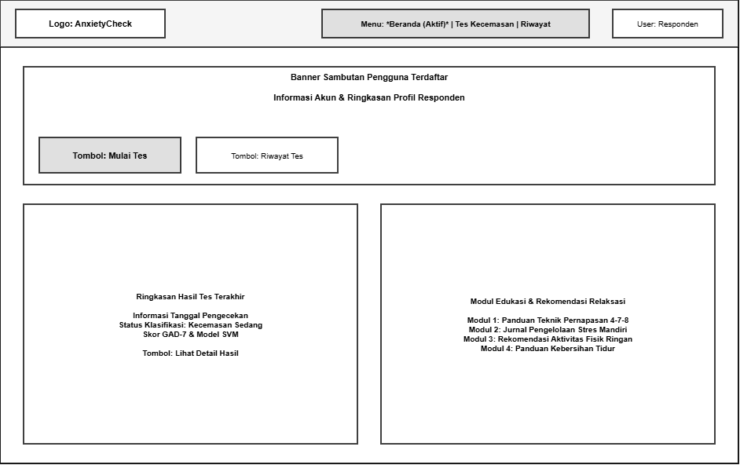

Hi, I'm Dian Tri Yuniarti — an Informatics Engineering graduate from Universitas Pamulang (GPA 3.60 / 4.00) with hands-on experience developing Full-Stack Web applications, native Android apps, and Support Vector Machine (SVM) classification systems.
From relational database schemas and native mobile modules to applied machine learning classification pipelines.
I am an Informatics Engineering graduate from Universitas Pamulang with hands-on experience developing software systems across web environments, native Android applications, and machine learning models for data classification.
I approach software engineering with a focus on structured logic and reliability. During my internship at Kopiluvium, I designed and deployed a web-based warehouse stock-taking system that eliminated manual discrepancies. For my undergraduate thesis, I developed AnxietyCheck, a clinical screening application powered by a Support Vector Machine model that achieved 100% testing accuracy on 554 samples.
In addition to programming, I have co-authored 4 scientific research papers published in accredited national journals (SINTA-indexed), covering software engineering lifecycles, multi-criteria decision support systems, and cybersecurity vulnerability assessments.
Clear relational schemas, defensive programming against SQL injections, and maintainable MVC/OOP architecture.
Rigorous testing validation, cross-validation metrics, and documented academic methodology.
A curated portfolio of software systems, machine learning models, mobile apps, and research artifacts developed through academic milestones and industry internship.

Full-stack web application classifying anxiety levels into 4 tiers using the GAD-7 scale and Support Vector Machine (Linear Kernel, C=1) with 100% test accuracy. Features patient history and clinician validation.

Computerized inventory platform replacing physical logbooks. Engineered under the Waterfall model with 3 role tiers, real-time stock audits, discrepancy calculations, and automated report exports.
User-centered design system and responsive web interface for an online pharmacy catalog, digital prescription submissions, and streamlined checkout flows.

Digital advocacy poster promoting Indonesian cultural preservation, awarded 4th Place nationally at the Festival Seni dan Pendidikan Ilmiah (FSPI) by Universitas Negeri Yogyakarta.
// Regex & State Machine
^[+-]?\d+(\.\d+)?[eE][+-]?\d+$
Input: 6.022e23 -> VALID (Accepted)
Interactive web utility validating real-number scientific notation syntax using Finite State Automata (FSA) state transitions and real-time regex parsing.
Web-based admissions system managing online applicant registration, academic certificate verification, review committees, and automated selection result notices.
Sales transaction application built on Object-Oriented PHP. Features automated tax calculations, PDF invoice printing, prepared statement security, and ACID database transactions.
Native Android mobile application for precise employee check-in. Features Google Maps GPS coordinate geofencing, speech recognition voice inputs, and offline SQLite data persistence.
Desktop application managing dispensary queues using First-In-First-Out (FIFO) scheduling. Features automated counter ticket calling, queue status display, and MySQL JDBC persistence.
Java EE web application for payroll processing (JSP & Servlets) with automated PDF payslip generation via JasperReports, paired with an Android SDK multimedia camera module.
No projects found matching your search.
Try searching for "Python", "PHP", "SVM", or "Android".
Four applied computing research papers co-authored and published in accredited national scientific journals (SINTA) and Google Scholar.
Authors: Yuniarti, D. T., Alfitra, R., Prasetya, R. N., & Saprudin
Details requirements engineering, UML modeling, Figma UI prototyping, PHP/MySQL implementation, and Black-Box verification for Kopiluvium warehouse inventory audits.
Authors: Ester, R., Yuniarti, D. T., Valentina, P. E., & Putra, F. M. K.
Implementation of the Weighted Aggregated Sum Product Assessment (WASPAS) decision support method to evaluate and recommend optimal learning patterns based on student behavioral preferences.
Authors: Suhada, J., Ardana, I. M. S., Yuniarti, D. T., & Rizky, M.
Empirical research examining AI tool integration into vocational computing curricula to bridge digital workforce competency requirements.
Authors: Kumalasari, I., Yuniarti, D. T., Indriani, R., Rizky, M., & Gea, K.
Cybersecurity assessment of an institutional e-learning platform identifying configuration weaknesses, input sanitization gaps, and actionable security remediation strategies.
A disciplined technical toolkit spanning backend business logic, database engineering, responsive frontends, and machine learning pipelines.
Formal academic training combined with an intensive student exchange program and industry software engineering internship.
My academic journey at Universitas Pamulang provided rigorous training in core computer science, software engineering methodology, and applied machine learning.
Through the national Merdeka Student Exchange (PMM Batch 4) at Universitas Sam Ratulangi in Manado, I completed advanced coursework in automata theory, software architecture, and cross-cultural collaborative research.
During my internship at Kopiluvium, I put these principles into practice by designing and developing a warehouse stock-taking system under the Waterfall model, culminating in a published research paper in the OKTAL Journal.
B.S. in Informatics Engineering · GPA 3.60 / 4.00 (Honors)
Undergraduate Thesis: Implementation of Support Vector Machine Algorithm for Early Anxiety Disorder Classification in Generation Z (Web-Based). Model achieved 100% testing accuracy.
Independent Student Exchange Program (PMM Batch 4)
Cross-disciplinary computing coursework, automata theory projects, and collaborative user experience research.
Software Engineering Internship · Warehouse Inventory System
Designed system architecture, Figma UI mockups, MySQL database schema, and native PHP application for physical warehouse inventory audits. Resulted in published SINTA journal paper.
High School Diploma · Mathematics & Natural Sciences (MIPA)
I am actively seeking full-time roles in Full-Stack Web Development, Machine Learning, and Software Engineering. Let's discuss how I can contribute to your engineering goals.